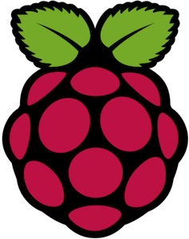
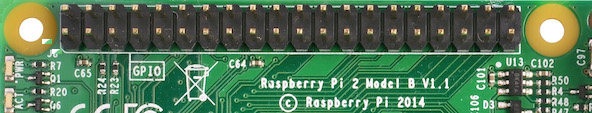
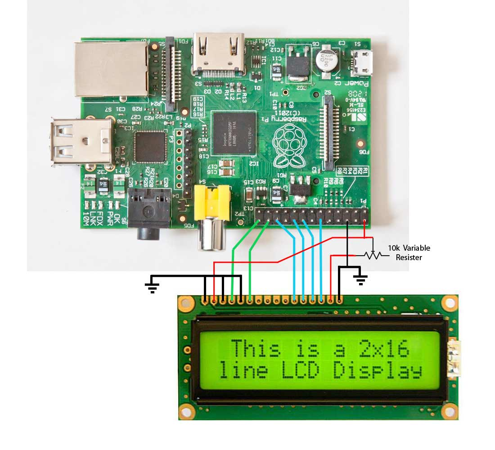

Python Practice
on Raspberry Pi
Created by Ganesh Bhosale in Dwij IT Solutions

Your support
Like this Python on Raspberry Pi tutorial, our tutorials are always open-source for learners. Like our facebook page to get more free tutorial updates.
From Python to RPi
- In Earlier presentation you have learned the basics of python
- Now we will go for various uses of python over RPi Hardware and more advanced stuff.
What are we going to learn:
- Various Python libraries for Raspberry Pi
- Hardware Setups (WiFi, USB)
- TKinter (User Interfaces)
- GPIO programming
- OpenCV (Computer Vision) programming
Python libraries for
Raspberry Pi

Python & Internet
- Use of HTTP (Hypertext Transfer Protocol)
- We need python-requests library. Lets install.
sudo apt-get install python-requests- Now open interpreter and import this library
>>> import requests as req
>>> r = req.get("http://google.com")
>>> r.status_code
200
>>> r.text # Print data fetched from site
Request Status Codes
| Code | Meaning |
|---|---|
| 200 | OK |
| 301 | Moved Permanently |
| 307 | Moved Temporary |
| 401 | Unauthorized |
| 404 | Not Found |
| 500 | Server Error |
Weather Data Access
- We can use http://openweathermap.org/current
- We need web service link:
http://api.openweathermap.org/data/2.5/weather?q=Pune&appid=44db6a862fba0b067b1930da0d769e98- This will give information in JSON (JavaScript Object Notation) Format like below:
{"coord":{"lon":73.86,"lat":18.52},"weather":[{"id":800,"main":"Clear","description":"clear sky","icon":"01n"}],"base":"stations","main":{"temp":291.988,"pressure":950.59,"humidity":52,"temp_min":291.988,"temp_max":291.988,"sea_level":1025.4,"grnd_level":950.59},"wind":{"speed":2.31,"deg":279.501},"clouds":{"all":0},"dt":1457198019,"sys":{"message":0.0101,"country":"IN","sunrise":1457140797,"sunset":1457183515},"id":1259229,"name":"Pune","cod":200}
Program
- Temperature in Kelvin; C = K – 273.15
>>> import requests as rq
>>> import json
>>> r = rq.get("http://api.----/weather?q=Pune&appid=1111")
>>> info = json.loads(r.text)
>>> print info['main']['temp']
294.14
>>>
- Use this site to understand the json: http://json.parser.online.fr
Hardware Setups
raspi-config
(Raspberry Pi configuration tool)
$ sudo raspi-config- Detailed information on raspberrypi.org
Enable SSH on RPi
- Enter following command in the terminal
$ sudo raspi-config- Navigate to Advanced Settings -> ssh. Hit Enter
- Enable ssh server
Auto mounting Pen-drives
- Enable bash commands:
sudo bash- Install library usbmount using apt-get
sudo apt-get install usbmount- Check for usb devices
df -h
root@raspberrypi:/home/pi/practice2/usb# df -h
Filesystem Size Used Avail Use% Mounted on
rootfs 7.2G 4.0G 2.9G 58% /
/dev/root 7.2G 4.0G 2.9G 58% /
devtmpfs 180M 0 180M 0% /dev
tmpfs 38M 212K 38M 1% /run
tmpfs 5.0M 0 5.0M 0% /run/lock
tmpfs 75M 0 75M 0% /run/shm
/dev/mmcblk0p1 56M 19M 38M 34% /boot
root@raspberrypi:/home/pi/practice2/usb# df -h
Filesystem Size Used Avail Use% Mounted on
rootfs 7.2G 4.0G 2.9G 58% /
/dev/root 7.2G 4.0G 2.9G 58% /
devtmpfs 180M 0 180M 0% /dev
tmpfs 38M 224K 38M 1% /run
tmpfs 5.0M 0 5.0M 0% /run/lock
tmpfs 75M 0 75M 0% /run/shm
/dev/mmcblk0p1 56M 19M 38M 34% /boot
/dev/sda1 2.0G 0 2.0G 0% /media/usb0 # Device found
Unmount USB by Commands
- Before un-mounting make sure you got correct address
- Check devices using df -h
$ sudo umount /dev/sda1
Unmount USB via Python
- Before un-mounting make sure you got correct address
- Here we need to load module subprocess
>>> from subprocess import call
>>> call(["umount", "/dev/sdb1"])
Start Program at Rpi boot
- Here we are going to create new Cron Job
- Cron Jobs execute themselves when their time comes up
- To edit cron job file
$ sudo crontab -e- Now put new line into file like below
@reboot python /home/pi/MyScript.py &- Make sure you don’t create infinite processes here
- Note: Only parallel programs without keyboard activity
Start Program at Rpi boot 2
- Make system auto-login
$ sudo nano /etc/inittab- Comment this line
#1:2345:respawn:/sbin/getty 115200 tty1- Add new line
1:2345:respawn:/bin/login -f pi tty1 /dev/tty1 2>&1- Save File by Ctrl + O and Ctrl + X
Start Program at Rpi boot 2
- Run script after auto-login
$ sudo nano /etc/profile- NoteAdd new line
/home/pi/your_script_name.sh- Save File by Ctrl + O and Ctrl + X
Create Shell Script to execute program
- Inside file your_script_name.sh
#!/bin/bash
sleep 2
sudo python /home/pi/my_program.py
WiFi Setup
ifconfig
wlan0 Link encap:Ethernet HWaddr e8:4e:06:0d:c8:17
UP BROADCAST MULTICAST MTU:1500 Metric:1
RX packets:77 errors:0 dropped:8 overruns:0 frame:0
TX packets:77 errors:0 dropped:3 overruns:0 carrier:0
collisions:0 txqueuelen:1000
RX bytes:11935 (11.6 KiB) TX bytes:11935 (11.6 KiB)
- No IP Address
Step 1
- Run command:
$ sudo nano /etc/network/interfaces- You will see this:
auto lo
iface lo inet loopback
iface eth0 inet dhcp
Edit this interfaces file to
auto lo
iface lo inet loopback
iface eth0 inet dhcp
auto wlan0
allow-hotplug wlan0
iface wlan0 inet dhcp
wpa-ssid "My_WiFi_Name"
wpa-psk "My_WiFi_Password"
Now Reboot and check ifconfig
wlan0 Link encap:Ethernet HWaddr e8:4e:06:0d:c8:17
inet addr:192.168.0.102 Bcast:192.168.0.255 Mask:255.255.255.0
UP BROADCAST RUNNING MULTICAST MTU:1500 Metric:1
RX packets:51 errors:0 dropped:2 overruns:0 frame:0
TX packets:4 errors:0 dropped:1 overruns:0 carrier:0
collisions:0 txqueuelen:1000
RX bytes:8417 (8.2 KiB) TX bytes:728 (728.0 B)
- The IP means we have successfully connected to Wifi
Date & Time Setup
- Raspberry Pi doesn’t have in-built RTC
- So it can’t show current time by itself
- Either we need to set time after an interval or use Real Time Clock (RTC) Hardware for time
- How to Set Time manually:
$ sudo date --set="Sat Aug 16 1:55:16 EDT 2014"- How to check current Date:
$ date
TKinter (User Interfaces)

TKinter
- Only works in LXDE Graphics Environment
- Its in-built in Ubuntu, Rasbian & Mac
- More information about TKinter on https://wiki.python.org/moin/TkInter
Key & mouse events

Key & mouse events
from Tkinter import *
root = Tk()
def key(event):
print "pressed", repr(event.char), " keysym", event.keysym
def callback(event):
frame.focus_set()
print "clicked at", event.x, event.y
frame = Frame(root, width=100, height=100)
frame.bind("<Key>", key) # bind event for key -> key()
frame.bind("<Button-1>", callback) # bind event for mouse -> callback()
frame.pack()
root.mainloop()
Button & Its Events

Button & Its Events
from Tkinter import *
def Call():
lab= Label(root, text = 'You pressed\nthe button')
lab.pack()
button['bg'] = 'blue'
button['fg'] = 'white'
root = Tk()
root.geometry('100x110+350+70')
button = Button(root, text = 'Press me', command = Call)
button.pack()
root.mainloop()
TKinter
- More such example on wiki.python.org
GPIO programming
GPIO
(General Purpose Input Output)
- Pins provided for external interfacing
- Python will let you access the pins by using Module called RPi.GPIO
- It comes pre in-built. If not, use following commands with internet connectivity.
$ sudo apt-get install python-rpi.gpio
$ sudo apt-get update
WARNING
- Do not short the GPIO Pins of RPi. Short circuit may damage your hardware.
- Do not connect LED or any other component directly without resisters in series.
GPIO PINS

Useful Website: http://pinout.xyz
GPIO - HOW TO CONNECT
GPIO outputs are easy; they are on or off, HIGH or LOW, 3v or 0v.
GPIO outputs are easy; they are on or off, HIGH or LOW, 3v or 0v.

Root Access
- Run command:
$ sudo su
Using GPIO Library
#import library
import RPi.GPIO as GPIO
# set GPIO mode to BCM (Broadcom SOC channel)
GPIO.setmode(GPIO.BCM)
# set GPIO direction as Output
GPIO.setup(25, GPIO.OUT)
# set GPIO pin output as Low
GPIO.output(25, GPIO.LOW)
blink.py
import RPi.GPIO as GPIO
import time
GPIO.setmode(GPIO.BCM)
GPIO.setup(25, GPIO.OUT)
while True:
GPIO.output(25, GPIO.LOW)
time.sleep(1)
GPIO.output(25, GPIO.HIGH)
time.sleep(1)
button.py
Don’t forget the pull-down resistor, which goes between ground and the input pin
import RPi.GPIO as GPIO
import time
GPIO.setmode(GPIO.BCM)
GPIO.setwarnings(False)
GPIO.setup(7, GPIO.OUT)
GPIO.setup(8, GPIO.IN)
count = 0
while True:
val = GPIO.input(8)
if(val == True):
count = count + 1
print("Button pressed.", str(count))
GPIO.output(7, GPIO.HIGH)
else:
GPIO.output(7, GPIO.LOW)
time.sleep(0.01)
button_sound.py
import pygame.mixer as mx
import RPi.GPIO as GPIO
from time import sleep
from sys import exit
GPIO.setmode(GPIO.BCM)
GPIO.setwarnings(False)
GPIO.setup(7, GPIO.OUT)
GPIO.setup(8, GPIO.IN)
mx.init(48000, -16, 1, 1024)
sound1 = mx.Sound("/usr/share/sounds/alsa/Front_Center.wav")
soundCh = mx.Channel(1)
while True:
try:
if(GPIO.input(8) == True):
soundCh.play(sound1)
GPIO.output(7, GPIO.HIGH)
sleep(0.01)
except KeyboardInterrupt:
GPIO.output(7, GPIO.LOW)
exit()
Enabling sound via Sound Port
- Via analog output port
$ sudo amixer cset numid=3 1- Via HDMI Cable
$ sudo amixer cset numid=3 2
16×2 LCD interfacing with Raspberry Pi
16×2 LCD interfacing with Raspberry Pi
# Reference: http://dwij.co.in/lcd-interfacing-with-raspberry-pi
# The wiring for the LCD is as follows:
# 1 : GND
# 2 : 5V
# 3 : Contrast (0-5V)*
# 4 : RS (Register Select)
# 5 : R/W (Read Write) - GROUND THIS PIN
# 6 : Enable or Strobe
# 7 : Data Bit 0 - NOT USED
# 8 : Data Bit 1 - NOT USED
# 9 : Data Bit 2 - NOT USED
# 10: Data Bit 3 - NOT USED
# 11: Data Bit 4
# 12: Data Bit 5
# 13: Data Bit 6
# 14: Data Bit 7
# 15: LCD Backlight +5V**
# 16: LCD Backlight GND
#import
import RPi.GPIO as GPIO
import time
# Define GPIO to LCD mapping
LCD_RS = 7
LCD_E = 8
LCD_D4 = 25
LCD_D5 = 24
LCD_D6 = 23
LCD_D7 = 18
# Define some device constants
LCD_WIDTH = 16 # Maximum characters per line
LCD_CHR = True
LCD_CMD = False
LCD_LINE_1 = 0x80 # LCD RAM address for the 1st line
LCD_LINE_2 = 0xC0 # LCD RAM address for the 2nd line
# Timing constants
E_PULSE = 0.00005
E_DELAY = 0.00005
def main():
# Main program block
GPIO.setwarnings(False)
GPIO.setmode(GPIO.BCM) # Use BCM GPIO numbers
GPIO.setup(LCD_E, GPIO.OUT) # E
GPIO.setup(LCD_RS, GPIO.OUT) # RS
GPIO.setup(LCD_D4, GPIO.OUT) # DB4
GPIO.setup(LCD_D5, GPIO.OUT) # DB5
GPIO.setup(LCD_D6, GPIO.OUT) # DB6
GPIO.setup(LCD_D7, GPIO.OUT) # DB7
# Initialise display
lcd_init()
# Send some test
lcd_byte(LCD_LINE_1, LCD_CMD)
lcd_string("Dwij IT Solution")
lcd_byte(LCD_LINE_2, LCD_CMD)
lcd_string("Ganesh Bhosale")
time.sleep(10) # 10 second delay
# Send some text
lcd_byte(LCD_LINE_1, LCD_CMD)
lcd_string("Raspberry Pi in")
lcd_byte(LCD_LINE_2, LCD_CMD)
lcd_string("Pune, India")
time.sleep(10)
# main function ends
def lcd_init():
# Initialise display
lcd_byte(0x33,LCD_CMD)
lcd_byte(0x32,LCD_CMD)
lcd_byte(0x28,LCD_CMD)
lcd_byte(0x0C,LCD_CMD)
lcd_byte(0x06,LCD_CMD)
lcd_byte(0x01,LCD_CMD)
def lcd_string(message):
# Send string to display
message = message.ljust(LCD_WIDTH," ")
for i in range(LCD_WIDTH):
lcd_byte(ord(message[i]),LCD_CHR)
def lcd_byte(bits, mode):
# Send byte to data pins
# bits = data
# mode = True for character
# False for command
GPIO.output(LCD_RS, mode) # RS
# High bits
GPIO.output(LCD_D4, False)
GPIO.output(LCD_D5, False)
GPIO.output(LCD_D6, False)
GPIO.output(LCD_D7, False)
if bits&0x10==0x10:
GPIO.output(LCD_D4, True)
if bits&0x20==0x20:
GPIO.output(LCD_D5, True)
if bits&0x40==0x40:
GPIO.output(LCD_D6, True)
if bits&0x80==0x80:
GPIO.output(LCD_D7, True)
# Toggle 'Enable' pin
time.sleep(E_DELAY)
GPIO.output(LCD_E, True)
time.sleep(E_PULSE)
GPIO.output(LCD_E, False)
time.sleep(E_DELAY)
# Low bits
GPIO.output(LCD_D4, False)
GPIO.output(LCD_D5, False)
GPIO.output(LCD_D6, False)
GPIO.output(LCD_D7, False)
if bits&0x01==0x01:
GPIO.output(LCD_D4, True)
if bits&0x02==0x02:
GPIO.output(LCD_D5, True)
if bits&0x04==0x04:
GPIO.output(LCD_D6, True)
if bits&0x08==0x08:
GPIO.output(LCD_D7, True)
# Toggle 'Enable' pin
time.sleep(E_DELAY)
GPIO.output(LCD_E, True)
time.sleep(E_PULSE)
GPIO.output(LCD_E, False)
time.sleep(E_DELAY)
if __name__ == '__main__':
main()
OpenCV (Computer Vision) Programming using Python

References
Thank you
- Ganesh Bhosale
- Dwij IT Solutions
Did you liked this tutorial ?
Checkout more such tutorials on: http://dwij.net/tuts